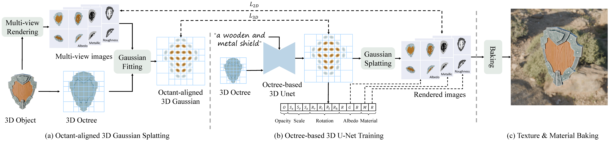

Method

An overview of our PBR material generation framework. (a) We propose octant-aligned 3D Gaussian Splatting, which positions a 3D Gaussian at the center of each finest leaf node of the constructed octree. Additional channels are added at the end of the Gaussian parameters to model PBR material. (b) We use the 3D U-Net built upon octree-based convolutional networks to predict the Gaussian parameters. Our octree-based 3D U-Net is trained by minimizing the difference on 2D raster images and 3D Gaussian parameters. (c) We bake the multi-view rendered images to the UV space of the input 3D model to realize physically based rendering under new illumination environments.


BibTeX
@article{xiong2024texgaussian,
title={TexGaussian: Generating High-quality PBR Material via Octree-based 3D Gaussian Splatting},
author={Bojun Xiong and Jialun Liu and Jiakui Hu and Chenming Wu and Jinbo Wu and Xing Liu and Chen Zhao and Errui Ding and Zhouhui Lian},
year={2024},
eprint={2411.19654},
}